Модуль для интеграции с сервисом DaData, который позволяет ускорить заполнение форм и проверить введённые данные.
После подключения модуля в дизайнере интерфейсов будут доступны специальные виджеты. На страницах и формах приложений они будут отображаться в виде строки поиска и полей с данными, которые автоматически заполняются информацией, полученной из модуля DaData.
Виджеты, входящие в модуль:
- Поиск компании — помогает пользователю быстро ввести реквизиты организации. Находит компанию или индивидуального предпринимателя по ИНН, КПП, ОГРН. Возвращает реквизиты компании, руководителей и другую информацию о компании;
- Поиск банка — помогает быстро ввести реквизиты банка. Находит банк по любому из идентификаторов: БИК, SWIFT, ИНН, ИНН + КПП (для филиалов) или регистрационному номеру Банка России. Возвращает реквизиты банка, корр. счёт, адрес и статус — действующий или на ликвидации;
- Проверка паспорта — проверяет паспорт по справочнику недействительных паспортов МВД. Заполняет организацию, выдавшую паспорт, по коду подразделения;
- Проверка e-mail — проверяет на одноразовый адрес. Классифицирует адреса на личные (@mail.ru, @yandex.ru), корпоративные (@companyname.com) и ролевые (info@, support@). Помогает пользователю быстро ввести адрес электронной почты;
- Поиск адреса — помогает быстро ввести корректный адрес. Разбивает адрес из строки по отдельным полям (регион, город, улица, дом, квартира) согласно КЛАДР/ФИАС (ГАР). Определяет почтовый индекс, часовой пояс, ближайшее метро, координаты, стоимость квартиры и другую информацию об адресе.
Настроить модуль
Начало внимание
Перед началом настройки убедитесь, что ваш аккаунт в DaData активен.
Конец внимание
- Зайдите в личный кабинет вашего аккаунта DaData.
- Скопируйте API-ключ и Секретный ключ.
- Перейдите в ELMA365. На главной странице в левом меню нажмите на значок
 . В открывшемся окне Настройка разделов и Решений перейдите на вкладку Решения.
. В открывшемся окне Настройка разделов и Решений перейдите на вкладку Решения. - Нажмите кнопку +Добавить решение и выберите опцию Скачать.
- В каталоге ELMA365 Store установите модуль Интеграция с DaData.
- После успешной установки перейдите в Администрирование > Модули > Интеграция с DaData.
- Вставьте скопированные на шаге 2 API-ключ и Секретный ключ в соответствующие поля.
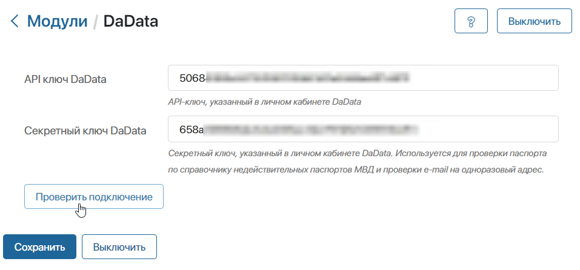
Секретный ключ требуется для использования сервисов, которые оплачиваются отдельно от подписки.
Если в настройках модуля не указан секретный ключ или подключение по секретному ключу произошло с ошибкой, проверка паспорта и e-mail будет недоступна.
- Нажмите кнопку Проверить подключение. Если связь между системами установлена, вы увидите уведомление об этом.
- Нажмите кнопку Сохранить.
Настройка виджетов
После подключения модуля DaData пользователи из группы Администраторы могут добавить входящие в модуль виджеты на страницы и формы приложений.
Например, в разделе CRM на формы создания и редактирования приложения Компании можно добавить виджеты Поиск компании и Поиск банка. А на формы приложения Контакты — виджеты Проверка паспорта, Проверка e-mail и Поиск адреса.
Чтобы разместить виджет на форме, перейдите в дизайнер интерфейсов. Перетащите виджет с правой панели дизайнера на поле для моделирования или нажмите кнопку +Виджет. Подробнее о добавлении виджетов читайте в статье «Шаблон формы».
Откроется окно настроек, которое состоит из двух вкладок:
- Вкладка «Основные» — индивидуальна для каждого виджета. Содержит параметры, отвечающие за работу и внешний вид виджета;
- Вкладка «Системные» — настройки одинаковы для всех виджетов. Позволяют управлять видимостью виджетов и доступом к ним, настраивать их поведение при наведении курсора и т. д. Подробнее можно прочитать в статье «Системные настройки виджетов».
Виджет «Поиск компании»
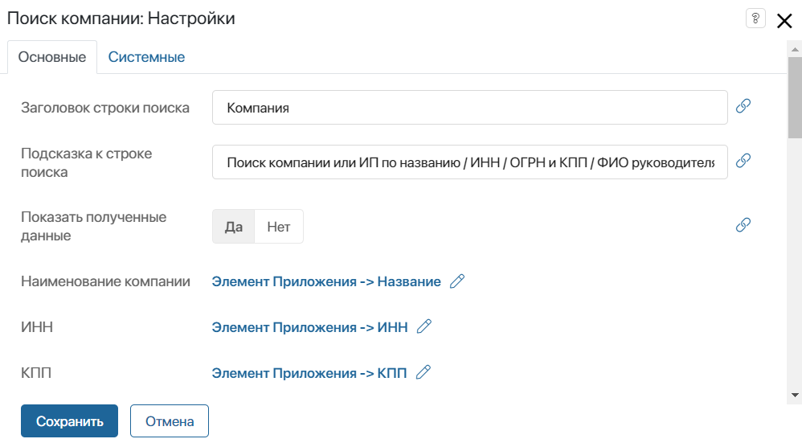
- При необходимости отредактируйте заголовок, который отображается над строкой поиска, и текст подсказки, который отображается под строкой.
- В поле Показать полученные данные выберите Да, чтобы на форме отображались все поля, которые автоматически заполняются значениями, полученными из сервиса DaData. По умолчанию параметр установлен в положение Нет, и на форме отображается только строка поиска компании.
- Остальные поля автоматически заполняются данными из сервиса DaData. Их необходимо связать со свойствами приложения. Для этого нажмите на значок справа от названия поля, затем на ссылку <Не установлено>. В открывшемся списке выберите соответствующее свойство приложения.
- Для завершения настройки виджета нажмите кнопку Сохранить, а затем Опубликовать на верхней панели дизайнера интерфейсов.
- После этого откройте настроенную форму и начните вводить данные в строку поиска. В открывшемся списке компаний выберите нужную и убедитесь, что сервис DaData возвращает данные по компании: ИНН, КПП, ОГРН и другие реквизиты.
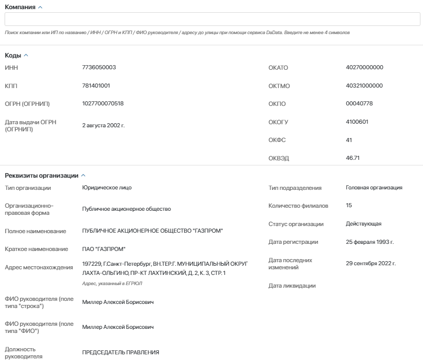
Виджет «Поиск банка»
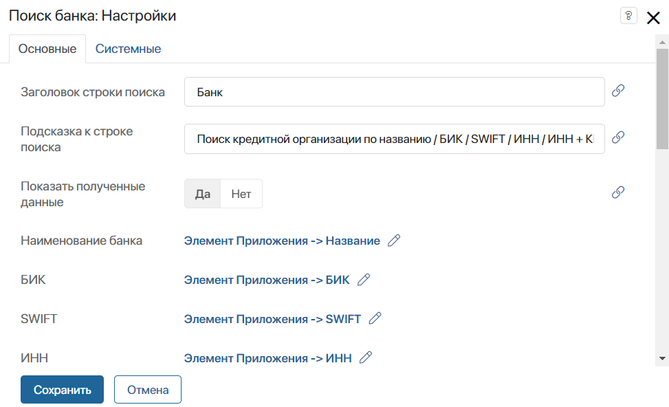
- При необходимости отредактируйте заголовок, который отображается над строкой поиска, и текст подсказки, который отображается под строкой.
- В поле Показать полученные данные выберите Да, чтобы на форме отображались все поля, которые автоматически заполняются значениями, полученными из сервиса DaData. По умолчанию параметр установлен в положение Нет, и на форме отображается только строка поиска банка.
- Остальные поля автоматически заполняются данными из сервиса DaData. Их необходимо связать со свойствами приложения. Для этого нажмите на значок справа от названия поля, затем на ссылку <Не установлено>. В открывшемся списке выберите соответствующее свойство приложения.
- Для завершения настройки виджета нажмите кнопку Сохранить, а затем Опубликовать на верхней панели дизайнера интерфейсов.
- После этого откройте настроенную форму и начните вводить данные в строку поиска банка. В открывшемся списке кредитных организаций выберите нужную и убедитесь, что сервис DaData возвращает данные: БИК, ИНН, КПП и другие реквизиты.
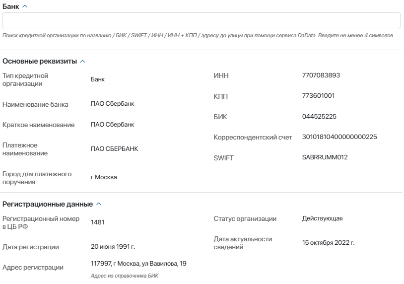
Виджет «Проверка паспорта»
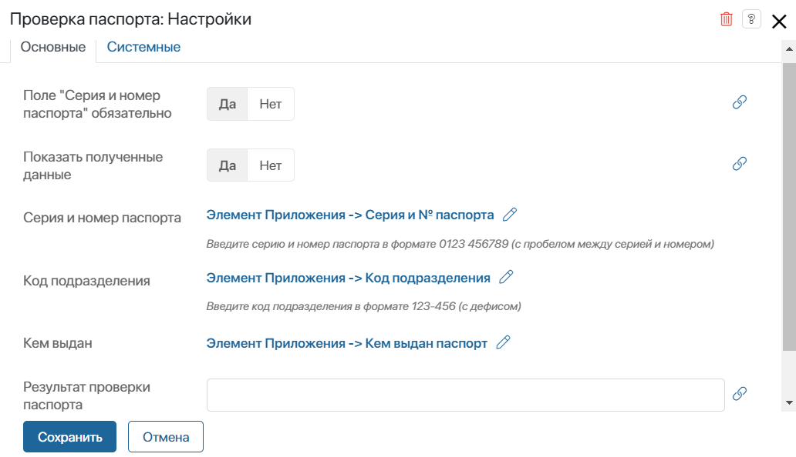
- Отметьте поле Серия и номер паспорта обязательным для заполнения.
- В поле Показать полученные данные выберите Да, чтобы на форме отображались все поля, которые автоматически заполняются значениями, полученными из сервиса DaData. По умолчанию параметр установлен в положение Нет, и на форме отображаются только поле для ввода серии и номера паспорта, а также кода подразделения, выдавшего паспорт.
- Остальные поля автоматически заполняются данными из сервиса DaData. Их необходимо связать со свойствами приложения. Для этого нажмите на значок справа от названия поля, затем на ссылку <Не установлено>. В открывшемся списке выберите соответствующее свойство приложения.
- Для завершения настройки виджета нажмите кнопку Сохранить, а затем Опубликовать на верхней панели дизайнера интерфейсов.
- После этого откройте настроенную форму и введите серию и номер паспорта. Если в настройках модуля указаны действующие API-ключ и Секретный ключ, в сервисе DaData произойдёт проверка паспорта по справочнику недействительных паспортов МВД. Результат проверки отобразится на форме.
- В поле Код подразделения начните вводить данные. В открывшемся списке выберите нужное подразделение.
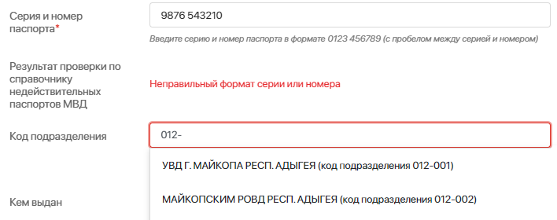
Виджет «Проверка e-mail»
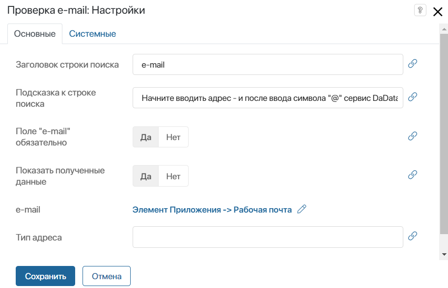
- При необходимости измените настройки отображения строки ввода e-mail: отредактируйте заголовок строки и текст подсказки к ней.
- Отметьте поле e-mail обязательным для заполнения.
- В поле Показать полученные данные выберите Да, чтобы на форме отображалось поле Тип адреса.
- Поля e-mail и Тип адреса необходимо связать со свойствами приложения. Для этого нажмите на значок справа от названия поля, затем на ссылку <Не установлено>. В открывшемся списке выберите соответствующее свойство приложения.
- Для завершения настройки виджета нажмите кнопку Сохранить, а затем Опубликовать на верхней панели дизайнера интерфейсов.
- После этого откройте настроенную форму и начните вводить e-mail. После ввода символа «@» появится выпадающий список адресов с почтовыми доменами. Выберите нужный.
Если в настройках модуля указаны действующие API-ключ и Секретный ключ, после выбора e-mail в сервисе DaData произойдёт проверка типа электронной почты. Возможные типы: личный, корпоративный, ролевой, одноразовый или некорректный. Результат проверки отобразится на форме.
Также произвести проверку можно, нажав кнопку Проверить e-mail.
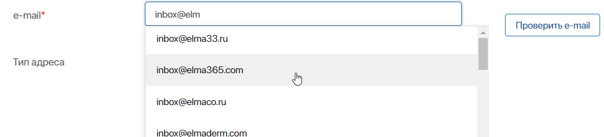
Виджет «Поиск адреса»
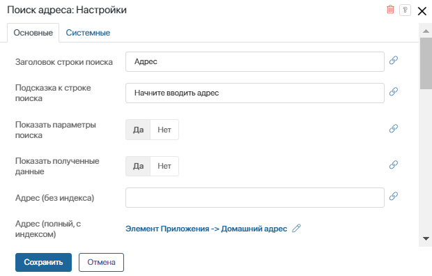
- При необходимости измените заголовок строки поиска адреса и текст подсказки к ней.
- В отличие от других виджетов модуля, в виджете Поиск адреса доступны дополнительные параметры поиска. Пользователи могут искать адрес, указав широту, долготу, радиус поиска, страну и т. д. Чтобы отобразить дополнительные параметры на форме, в поле Показать параметры поиска выберите Да.
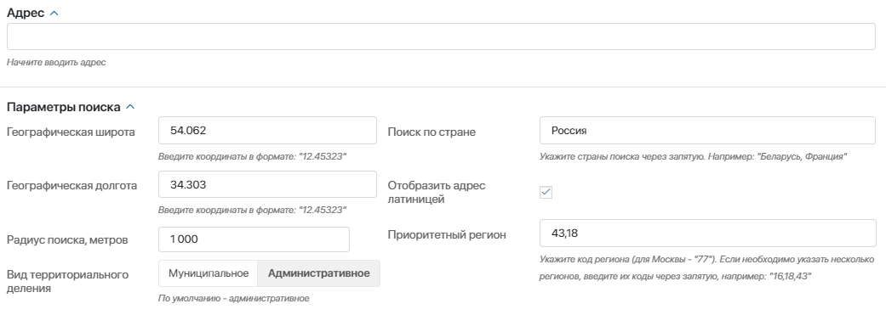
- В поле Показать полученные данные выберите Да, чтобы на форме отображались все поля, которые автоматически заполняются значениями, полученными из сервиса DaData. По умолчанию параметр установлен в положение Нет, и на форме отображаются только строка поиска адреса.
- Остальные поля автоматически заполняются данными из сервиса DaData. Их необходимо связать со свойствами приложения. Для этого нажмите на значок справа от названия поля, затем на ссылку <Не установлено>. В открывшемся списке выберите соответствующее свойство приложения.
- Для завершения настройки виджета нажмите кнопку Сохранить, а затем Опубликовать на верхней панели дизайнера интерфейсов.
- После этого откройте настроенную форму и начните вводить данные в строку поиска. В открывшемся списке адресов выберите нужный и убедитесь, что сервис DaData возвращает данные по нему.
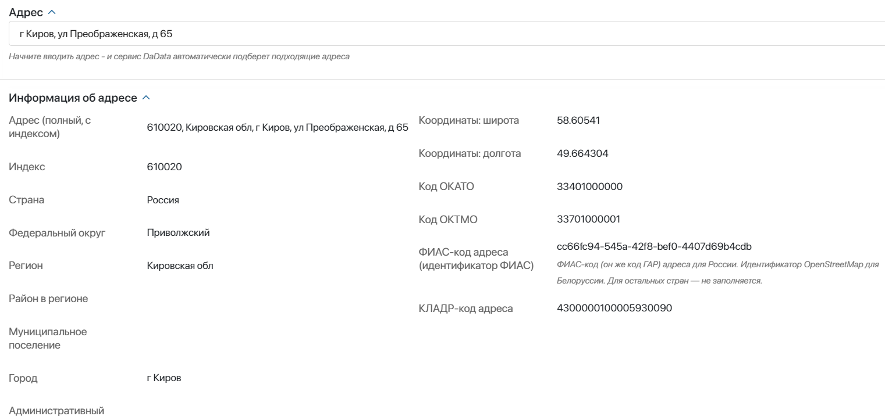